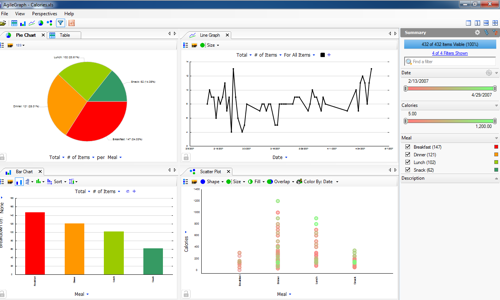
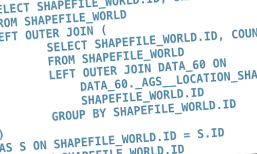
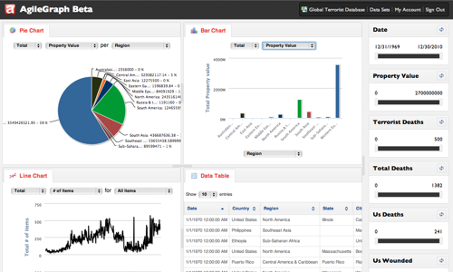

<div class="modal-header">
	<button type="button" class="close" data-dismiss="modal" aria-hidden="true">&times;</button>
	<h4 class="modal-title">AgileGraph</h4>
</div>
<div class="modal-body">
	<article>
		
	</article>
	<aside>AgileGraph started out as a Windows thick-client application developed by the founders of my company. It would parse a CSV or Excel spreadsheet of tabular data and automatically create filterable, easy-to-pivot charts and graphs. Unfortunately, it had performance issues and would become unresponsive if your data source contained more than 2000 rows.
	</aside>
	<article>
		
	</article>
	<aside>I was tasked to create a Web-based implementation of AgileGraph that had could handle larger data sets. After doing some research, I decided to create a stateless REST API for ingesting and querying tabular data sources. I used MonetDB for the data store and NancyFx for the REST interface. My new backend implementation increased maximum row size from 2000 rows to over 5 million rows, while keeping most query responses to near real-time (~100 ms).
	</aside>
	<article>
		
	</article>
	<aside>I worked hand-in-hand with my teammate to create the front-end for AgileGraph. The final implementation used NancyFx for server-side rendering using Razor HTML templates.
	</aside>
	<footer></footer>
</div>
